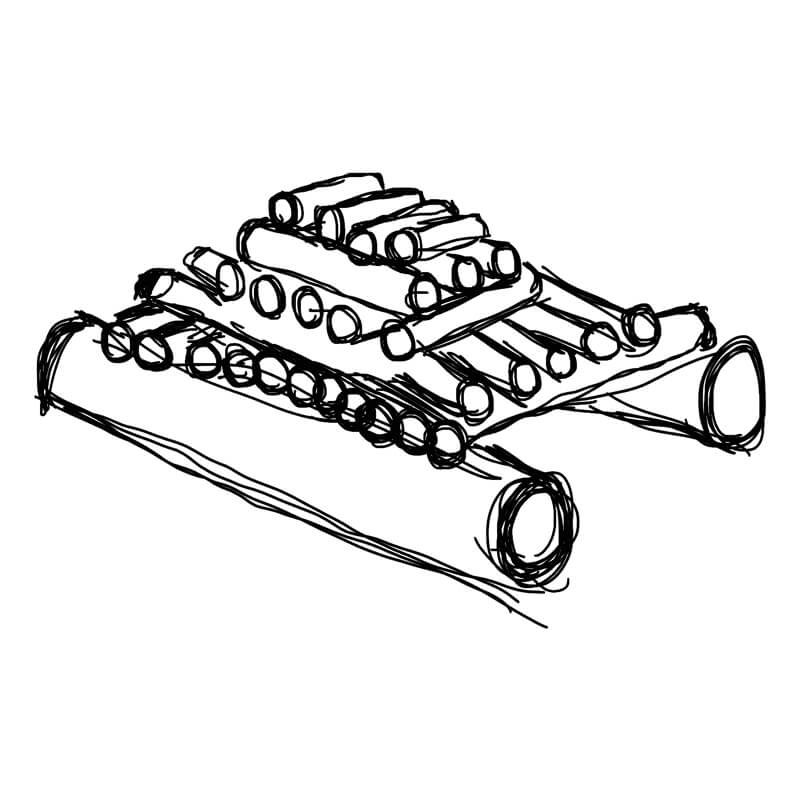

Ognisko
OGIEŃ
Ogień jest niezmiernie ważny dla osoby walczącej o przetrwanie zarówno pod względem fizycznym jak i psychologicznym. Podnosi on znacznie morale, utrzymuje cię w cieple , służy do suszenia twojej odzieży, gotuje wodę, może służyć do sygnalizacji oraz do przyrządzania potraw.
Trzy składniki potrzebne do rozniecenia ognia to powietrze, ciepło i paliwo. Kluczem do sukcesu jest przygotowanie wszystkich rodzajów materiałów i zapewnienie wszystkich składników.
Bądź cierpliwy i ćwicz, dopóki nie nauczysz się robić tego prawidłowo. Materiały na ognisko dzielą się na trzy kategorie: materiał do rozpałki wstępnej, rozpałka właściwa i paliwo.
MATERIAŁ DO ROZPAŁKI WSTĘPNEJ
Materiał do rozpałki wstępnej to dowolny rodzaj materiału łatwopalnego. Zwykle składa się on z cienkich, bardzo suchych włókien, Mogą to być paski kory z niektórych drzew i krzewów, pokruszone włókna z suchych roślin, cienkie, suche wióry drewniane, słoma i trawy, trociny z drewna żywicznego, bardzo cienkie wióry drewniane, wykładzina gniazd ptaków i gryzoni, puch nasienny, zwęglona tkanina, wata lub płótno opatrunkowe, wełna do krzesiwa, sucha sproszkowana żywica sosnowa, papier i gąbka gumowa.
Pracuj nad wyrobieniem nawyku posiadania zawsze przy sobie rozpałki wstępnej w wodoodpornym pojemniku.
ROZPAŁKA WŁAŚCIWA
Rozpałka właściwa ma wyższą temperaturę zapłonu, dodaje się ją do rozpałki wstępnej. Służy ona do podnoszenia temperatury palenia do punktu, w którym można dołożyć do ognia trudniej palące się paliwo. .
Rozpałka składa się z drobnych suchych gałązek, szyszek i igieł oraz drewna nasyconego substancjami łatwopalnymi
PALIWO
Paliwo nie musi być suche, ale mokre drewno wytwarza mnóstwo dymu. Najlepszym paliwem jest suche drewno oraz wewnętrzne warstwy zwalonych drzew i grubych gałęzi (które mogą być suche, nawet jeśli z wierzchu są mokre).
Mokrego drewna można używać jako opału po rozszczepieniu i zmieszaniu z drewnem suchym. Jeśli nie ma w okolicy żadnych drzew, skręć w kłębki suchą trawę, użyj uschłych kaktusów, wysuszonego mchu torfowego lub wysuszonego łajna zwierzęcego.
WYBÓR MIEJSCA NA OGNISKO:
- wybieraj miejsce odsłonięte przed wiatrem
- nie rozpalaj ogniska u podnóża drzew i środków łatwopalnych by uniemożliwić rozprzestrzenianie się ognia
- usuń z ziemi wszystko, co się na niej znajduje w promieniu co najmniej 1 m., aż do odsłonięcia gołej gleby
- w warunkach wietrznej pogody otocz ognisko kamieniami
- jeżeli grunt jest mokry lub pokryty śniegiem na platformie zbudowanej z kłód ze świeżo ściętych drzew, pokrytej warstwą ziemi lub kamieni
- w razie silnego wiatru wykop dół i w nim rozpal ogień
RODZAJE OGNISK
Istnieje wiele rodzajów ognisk. Poszczególne typy ognisk różnią się zależnie od swego przeznaczenia. Powinieneś nauczyć się, jak przygotowywać i rozpalać każde z nich.
Bezpieczne ognisko nocne
Ognisko takie umożliwia sen przy
ogniu bez niebezpieczeństwa, że płonące kłody stoczą się na
śpiącego. Połóż dwie duże świeże kłody na ognisku w taki
sposób, że będą chronić ciebie i twoje schronienie w miarę, jak
ognisko będzie się wypalać. Zwróć uwagę na położenie ściany
odbijającej ciepło.
Ognisko długotrwałe
Ognisko rozpala się w rowku
wykopanym dla ochrony przed wiatrem. Można je także
przygotować na ziemi, przy użyciu dwóch świeżych kłód
utrzymujących żar w jednym miejscu. Kłody muszą mieć średnicę
co najmniej 15 cm (im grubsze tym lepiej) i być ułożone tak, aby
można było stawiać na nich naczynia do gotowania. Pod kłody
można podłożyć dwa patyki o średnicy 2,5 cm, aby zapewnić
lepszy dopływ powietrza do ognia.
Ognisko "T"
Jest to ognisko dogodne do gotowania. Ogień
utrzymuje się w górnej części litery "T", skąd pobiera się żar do
gotowania w części dolnej.
Ognisko "wigwam"
Dogodne do gotowania i ogrzewania się
(pamiętaj, że zużywa wiele opału). Podpałkę wstępną należy
umieścić pośrodku przygotowanego miejsca wokół wbitego w
ziemię kołka, z otwarciem od strony nawietrznej dla
zapewnienia ciągu. Ognisko należy osłaniać od wiatru zapalając
je od strony nawietrznej.
Ognisko "gwiazda"
Przydatne, jeśli zależy nam na
oszczędnym zużyciu opału lub na niewielkim ogniu. Ogień pali
się pośrodku "gwiazdy"; stosownie do potrzeb podsuwa się
kłody do środka. Można je odciągnąć na bok, jeśli chcemy
gotować nad żarem. Dla ogniska tego rodzaju zaleca się
stosowanie twardego drewna.
Ognisko "dziurka od klucza"
Wykop w ziemi dołek w
kształcie dziurki od klucza, odpowiednio usytuowanej względem
wiatru. Ognisko to ma podobne zalety jak ognisko długotrwałe.

Ognisko "piramida"
Podobne do ogniska typu "studnia", z
tym, że ułożone jest z pełnych warstw drewna, a nie z ażurowej
konstrukcji. Takie ognisko pali się długo i można je wykorzystać
jako ogień na całą noc.
Ognisko "studnia"
Zapewnia dużo ciepła i światła dzięki
dużemu dopływowi powietrza. Dlatego może ono służyć do
gotowania i sygnalizacji.
Ognisko typu Dakota
Ognisko typu Dakota to technika budowy ogniska,
która polega na wykopaniu dwóch równoległych dołów w ziemi.
Pierwszy, główny dół, służy jako miejsce na ogień, a drugi, mniejszy dół,
umieszczony na wietrze, służy jako kanał wentylacyjny.